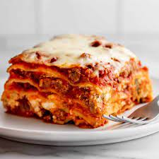

Lasagna

Description
In this Lasagna with Cottage Cheese, supple sheets of fresh lasagna noodles are layered with a meaty,
deeply savory sauce and a rich cottage cheese and pecorino Romano filling then topped with a generous
layer of creamy mozzarella cheese. If you know me, you know that when I'm not creating exciting recipes
to share with you, I'm poring over cookbooks and websites, reading recipes from the fantastic cooks who
inspire me. In one of these quests, I found Regina Schrambling's recipe for lasagna in the New York Times,
with more that 5,000 5-star reviews. Making it was an all-day project, but the lasagna was amazing. I wondered:
"Can I simplify this without sacrificing the extraordinary flavor?" The answer is a resounding: yes!
Ingredients
- 2 tablespoons olive oil, divided
- 2 medium red onions, finely diced
- 4 large garlic cloves, minced, divided
- 4 ounces pancetta, diced
- 1 ½ cup dry red wine
- 2 28-ounce cans crushed tomatoes with juice
- 2 tablespoons tomato paste
- 1 cup warm water
- 8 ounces grated pecorino Romano cheese, divided
- 4 large eggs, divided
- ½ cup finely chopped fresh parsley, divided
- 1 pound lean ground beef
- Kosher salt and freshly ground black pepper to taste
- 1 pound sweet Italian sausage
- ¼ teaspoon crushed red pepper flakes
- 16 ounces full-fat cottage cheese
- 1 pound grated mozzarella cheese, ideally whole milk
- 1 pound fresh lasagna noodles, ideally Homemade Lasagna Noodles
Steps
- Heat 1 tablespoon of olive oil in a large heavy Dutch oven or kettle over medium-low heat. Add onions, ½ of the garlic and pancetta; cook and stir 8 minutes, or until onions are translucent and pancetta is lightly browned. Season with kosher salt and pepper. Raise heat to medium-high and add the wine; cook until mostly evaporated, about 10 minutes. Add tomatoes along with their juice. Stir in warm water and tomato paste and bring to boil; reduce heat and simmer 30 minutes, stirring occasionally.
- While the sauce simmers, combine ¼ cup of the pecorino Romano cheese, ¼ cup of the chopped parsley, remaining minced garlic and 2 of the eggs in a large bowl. Add ground beef and season with kosher salt and pepper. Combine mixture with your hands until well blended.
- Heat remaining olive oil in a large skillet over medium-high heat. Add Italian sausage and crushed red pepper flakes; cook and stir until lightly browned. Transfer to clean bowl with a slotted spoon and pour off all but enough oil to coat the bottom. To the same skillet, add ground beef mixture (no need to wipe it out); cook and stir, breaking mixture up until lightly browned, but not quite cooked through. Add browned sausage to mixture in skillet and stir to combine; transfer to sauce. Stir sauce to combine and simmer 45 minutes, stirring occasionally.
- Once the sauce has simmered for 30 minutes, preheat the oven to 350˚F.
- In a large bowl, combine cottage cheese, remaining 2 eggs, remaining pecorino Romano cheese and parsley, and ½ of the mozzarella. Season mixture with kosher salt and pepper and thoroughly combine.
- Spoon a thick layer of sauce into a 9-by-12-inch lasagna pan and spread evenly. Cover with one layer of noodles. Spoon ¼ of the remaining sauce evenly over noodles followed by ⅓ of the cottage cheese mixture. Repeat for 2 more layers. Top with a final layer of noodles, and cover with the remaining sauce. Bake 45 minutes. Sprinkle remaining mozzarella evenly over the top and bake 15 minutes more until cheese is melted. Let stand 15-30 minutes before serving.
Back to Homepage